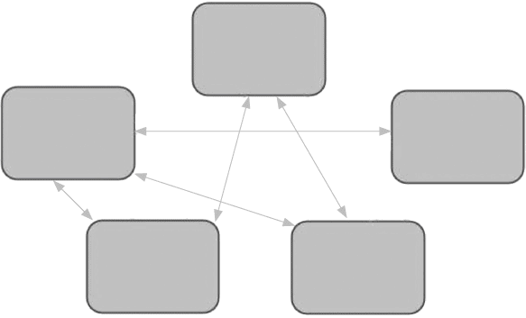

In dynamic situations, nothing will do more to shape the opportunities you have to explain yourself than questions. They’re an integral part of how we all communicate with each other. And if we’re in a situation where we’re the focus – say, a company briefing, an appointment with a client, a job interview, a conference panel and so on – then the questions will be constant.
In these moments, it’s not you who’s deciding when you speak or what the subject is. It can feel as if you’re not in control. To some degree that is true – in the same way that Roger Federer is not in control of the serve that he receives. However, there are many ways that he controls how he returns the serve.
It is the same with explanation. Done effectively, the questions don’t become irrelevant (far from it), but they cease to be the dominant influence on what you say. You can explain the information you believe is most relevant while matching it to the questions people have for you. It’s good for you and it’s good for them (this is where the tennis analogy ends, as clearly Federer’s returns are often not good news for his opponents . . .).
One of the most powerful things I’ve learned from conducting hundreds of interviews and from giving hundreds of presentations and Q&As, is that, on the whole, people and issues are predictable.
I don’t mean that to sound rude. We are all predictable. Our interests, concerns, turns of phrase, personalities and preoccupations tend not to radically shift from one day to the next. If a person has engaged on a subject before, when they next engage on the subject, they may well say similar things. I’m living proof of this. If, for your sins, you had to listen to me talk about my explainer videos at five different events, you’re going to hear me using very similar explanations, turns of phrase, statistics and ideas.
Not just that. If, say, one group of staff has some questions about an idea you’re proposing, it’s very likely another group of staff in a similar line of work will have similar questions. Or if you watch a politician, film star or businessperson do a ‘round’ of interviews one morning, they won’t get asked identical questions each time, but some are certain to crop up several times in different guises.
If you’re the one on the receiving end of the questions, this is all to your advantage. It gives you a good chance of guessing what is coming your way.
Think of everything you know about the scenario you’ll be in – the likely subject, the people likely to ask questions, the likely areas of interest – and write down questions you think you’ll get.
If the scenario is straightforward and short, this may be enough. But if this is a more robust or detailed arena, press on.
This is one of my favourites. Imagine you were on the other side asking the questions. What would you ask? If you were being as curious and exploratory as you could be and were faced with yourself, what information would you like to hear? Add those questions to the list.
If you wanted to make life as difficult as possible, what would you ask yourself then? What are the most awkward questions you can think of? Add them to the list.
This isn’t quite the same as question 3. Sometimes, I’ll be aware I’m avoiding talking about a subject because I haven’t quite worked out how best to explain myself on it. Perhaps I’ve not quite found the right turn of phrase or I don’t have the right piece of information to talk about it well. Note your discomfort! And add these questions to the list.
There’s always a chance you’ll get asked something that is outside what is reasonably considered part of the subject that you’re going to be speaking about. In my line of work on the news, this would be a small detail of a big story that I wouldn’t expect to know. These are questions you really don’t want to get but you just might. If you can think of some, add them to the list.
If you want to go the extra mile, this can be incredibly useful. There are many ways that we can find out about the people we’re going to encounter. If you’re meeting with or being interviewed by colleagues, you can ask other colleagues about them. What are their interests and passions? Which issues do they think are a priority?
If you’re visiting a company or institution, you may be able to speak to someone there to find out its perspective on whatever you’re talking about. Or there may be clips online to show you previous discussions featuring the people you’re going to meet. See if you can spot a pattern in the issues or questions that are raised.
Maybe you’re being referred to a consultant by a junior doctor. When you are referred, you could ask the junior doctor what the consultant is like and the kind of approach he or she takes to this illness? Or, as I’ve been writing this book, our eldest daughter has been doing exams. She looked up all the past papers for the exam board her school is using. That gave her clues as to the kind of questions the exam board favoured.
This process is not going to be perfect. You won’t end up with a definitive list of questions that are certain to come up. But you can start making educated guesses.
Depending on the situation, by now you’ll have a list that’s anywhere between a couple of questions and a lengthy selection.
The next task is to split the list into three:
• Questions you think you can answer
• Questions you need to work on how to answer
• Questions you need new information to answer
Let’s begin with the first section of your list – the questions you think you can answer. If you have multiple questions that are essentially asking about one subject, settle on one and get rid of the rest. Once you’ve done that, it’s time to get ready to use your strands. You’ve already prepared them and learned them. Now we’re going to put them to work.
Just before you start experimenting with your answers, it’s essential to emphasise one important aspect of dynamic explanation. For the moment, length is neither here nor there. Some of the questions on your list may be answered with ‘Yes’. That may be all you need to say. Others may require a multi-faceted answer pulling in several of your pre-prepared strands. What matters is that what you’re saying is relevant, efficient and clear. The duration is only important if your response is so long you think you may not have time for it.
Faced with the first question on your list, which combination of strands would you use to answer the question? Give yourself as long as you need to decide and then have a go at answering it. If it feels good, fantastic. If you feel happy with the content but it’s not flowing, do it again and again until it feels comfortable. If you’re not happy with the content, what other parts of the information you’ve prepared could you use? Bring it in and try again. We’ve got two goals here – for the information to match the question and for you to feel confident delivering it. When you get to that point, move on to the next one. If it’s helpful, make a note of the strands that you used for that question.
Next on your list are the questions that you’re not so sure how to answer. I’m hoping this is a relatively short list, as your work on Steps One to Four should have already tackled areas you weren’t sure of. Take these questions in turn. What is it that poses the problem? Are you not clear on what you want to say? Or is it that you’re not clear how to say it? Try to work out the former before you then move on to the latter.
Think about which strands of information can help you. Are you short of a phrase that could bring it together? If so, play around with what that could be. Doing so out loud can make you feel a bit of a lemon but keep going. The right phrase may well emerge. If you’re still struggling, ask a colleague or friend or relative. Sometimes a second pair of eyes can help unlock it. Or if that’s not possible, take a break. Your brain will keep thinking on it in the background. When you come back to it the next day, it may come more easily.
What is really important is that you don’t ignore the fact that you’re not comfortable on these questions. Much earlier we talked about how we can’t avoid detail that is hard to explain. It’s the same with hard questions. We really don’t want to ignore them. For several reasons. First – the obvious one. If you get asked them, you want to be able to answer well. Given you’re already struggling with them, the chances of this going well are low. Second, if you’re aware that there are questions which you’ll struggle to answer, that may impact your confidence throughout. Third, more likely than not this isn’t the only time you’ll get asked them. Getting them right will deepen your understanding of the subject and your ability to explain it. There are long-term benefits too.
Just as with the first part of your list, practise each response until you are happy with the content, precision and fluency. In particular, make sure you’re happy with the phrasing you’re using to navigate the answer. Often with difficult questions, even when we have all the information prepared, it is a turn of phrase that can both give the explanation its coherence and give you confidence to talk about it.
The last section of your list is for questions where you need more information. Now, we’ve already been through a process of identifying the most important information. I am going to assume we’ve not really missed anything obvious. These questions are ones that are some way off subject but that could come up. My rule of thumb here is that a little goes a long way. We can’t prepare detailed answers to questions that are unlikely to come up – the work would never end! But we can try to anticipate where an unreasonable question may come from and have at least something to say.
Let’s imagine I’m covering a big political story and there’s been, say, a low-level resignation that’s not of any great consequence. I might quickly check the name, the basic circumstances and what, if any, reaction there’s been. I wouldn’t be able to hold forth for minutes, but, if it comes up, I can fashion a quick answer before getting on to another topic as soon as possible.
On these questions, do a quick test that you have something to say on each – even if it’s only a little.
By this stage, you are in seriously good shape to offer superb explanations when faced with all sorts of incoming questions and challenges. You’ve taken all the information you’ve so carefully organised and memorised – and are now well versed at using it when faced with a range of the most likely questions that you’ll be asked. The familiarity of both the explanations and the likely incoming questions means that both will feel much more comfortable when you’re doing this for real.
However, to make the most of your work so far, we need to add flexibility and spontaneity to our explanations. To do that we still need all the time we can get.
We’ve already helped to give ourselves more time by doing all this preparation in advance.
By organising and memorising the information, that is all work that our brain doesn’t have to do in the moment.
By practising the questions, we’ve already worked hard on how to answer them.
Just as a student who has revised an essay plan can feel good if the question comes up in an exam, so we’re ready if our anticipated questions come up.
But they may not – at least not precisely as we imagined. That could spell trouble. We risk being unable to respond or responding in a way that sounds disconnected from the actual question we’ve been asked. To manage these risks, we need to go back to this diagram. You might remember it from earlier.

Our goal all along has been to be able to come at subjects via different entry points and using different orders. To this we want to add something else. In the moment, can we construct answers that directly address whatever question we’ve been asked? That, needless to say, is harder than rolling out pre-planned answers. But because of the work you’ve already done, it’s possible. And part of the reason why, is that there’s more time in the questions you’re being asked than you might realise.
First of all, let’s imagine an interview scenario and a classic question.
‘In this new role, you’ll be required to manage a large team. Please can you tell us about your experience of managing others in your current role and any previous roles you’ve held – including specific examples of where you’ve demonstrated judgement and leadership?’
By my measure, that takes seventeen seconds to say. It’s not ‘talk about managing others’, which takes less than two seconds. But it is essentially the same thing. This is where we can find space.
When I’ve put in a lot of work anticipating the questions that I might be asked, I become highly attuned to whether they might be arriving. I’m looking for clues from the moment the question starts. In this case, the word ‘manage’ arrives after three seconds. The question takes seventeen seconds. That is fourteen seconds for me to consider what I’ve got on the ‘shelf’ and to decide which order I am going to talk through my strands. Given I’ve thought about this before, doing that in fourteen seconds will be fine. As they are talking, I’m looking them in the eye and listening closely, but I am also lining up my answer. By the time the seventeen seconds is up, I’ve had enough to time to be ready to launch into what I want to say.
Picking questions is all about trigger words. When you were fine-tuning your questions list, I recommended settling on one question per subject area. That question can almost certainly be summarised with one or two words. The moment you hear that word, you know, to a large degree, what is going to be required.
If you can start picking questions early, you are giving yourself precious time. You may not think ten seconds is much but if you can stay calm and use it, it gives you a significant head start. Not convinced? Jot down some questions you think you’ll be asked on a subject that you’ve prepared. Select one at random and, after you’ve seen the question, take ten seconds before answering. At first, you might not make the most of it. Keep going, though, and you’ll soon develop the confidence to use the time. It makes a huge difference.
I’ve learned this from doing the news over the years. When I started, the idea that I’d use ten seconds for anything other than preparing to read the next script would have seemed absurd. As I’ve become more comfortable in the studio, a ten-second clip is an opportunity for a quick to-and-fro with the editor or to make a change to the next sentence.
Picking the question is the explanation equivalent of picking a tennis serve or a cricket delivery. If you do it, you know ahead of time what’s required. There’s more we can do, though, to use that time.
As you listen to the question, you’ll be thinking about which of your strands to use.
I often think of dynamic explanation like inversions of a chord on the piano. On the piano, you play a C major chord with the notes C, E and G. Or with E as the lowest note, then G and C. Or with G as the lowest note, then C and E. These inversions sound slightly different but they are the same chord. We can think of explanations like this too – there are core messages and information we are going to get across but each time the ordering may be different.
As you listen to a question, these are the seconds where you spot the subject and start deciding what you want to say. Sometimes, you may be so confident in your answer that you launch in without any concerns.
However, if I think there’s a risk of me losing my way, I share the structure I’ve chosen. This has the double benefit of laying out a checklist for me – and of giving whoever’s listening a guide to what I’m saying.
Let’s continue with our interview example:
‘I think I’d highlight three aspects of my career with relation to managing others – my time at X, my previous work at Y and, outside of work, my time volunteering at Z.’
X, Y and Z may well be strands. Once I get into them, I’m going to be confident running through them because they’re memorised. Setting out the order in my answer makes it more likely that I get to them. You’ll hear effective communicators doing this all the time – it’s helpful to them and to their audience.
A variation on this is: ‘I think we need to consider four factors when looking at this issue. First . . .’ Even without saying what they are – it’ll be far easier to remember those four factors and your audience will appreciate that you’ve indicated a structure and direction. It also demonstrates confidence in how you see the subject, which is always going to increase your chances of people listening.
I’m always mindful of appearing disconnected from the question that I’m being asked. So even if I’ve chosen my answer and am settling on the structure of my response, I’m still listening to the words and phrases that the questioner is using. Here’s the interview question again.
‘In this new role, you’ll be required to manage a large team. Please can you tell us about your experience of managing others in your current role and any previous roles you’ve held – including specific examples of where you’ve demonstrated judgement and leadership?’
In this case, ‘current role’, ‘previous roles’, ‘leadership’ and ‘judgement’ have all been requested. I’m going to use them all.
The strands I’ve prepared relating to management are now lined up. They will inevitably cover ‘current role’, ‘previous roles’, ‘leadership’ and ‘judgement’. Any explanation of my experience in that area would, I hope, have to involve those.
As I line up the strands I’ve prepared, I’m also thinking about how I can graft the language of the question on to my answers. (This is a technique that is invaluable in exams as well as interviews.)
Let’s imagine how this might go.
‘I’ve managed teams in a range of jobs. In my current role . . .’ [and I drop on to one strand]
‘I also showed judgement a number of times in my previous job . . .’ [and I drop on to a strand about my work there]
‘I would also emphasise the leadership I showed doing . . .’ [and I drop on to a strand about a part of my career that is relevant]
If this goes well, let’s consider what we’re able to do:
• Create space during the question to start planning the structure of what we say.
• Use strands of information that we’ve already organised and memorised so all of that work is done.
• Use bridging phrases to allow us to move between those strands smoothly regardless of the order we’ve chosen for them.
• Mirror the language of the question to ensure our answer directly connects to what we’ve been asked.
That, I would hope, is going to hit the mark. The example that I’ve chosen here is an interview. In this, you definitely want to answer the questions directly or you’re not going to score so well. However, there are other scenarios where you may really want to make sure you say something – whether you’re asked about it or not. Everything we’ve done so far can help us, as can the next couple of techniques.
This takes us right back to that BBC training course of 2002. The message then, as you’ll recall, was that there are ways of saying what you want to say regardless of what you’ve been asked and – I hasten to add – without being rude. The issue being that there will be times when we have information that it is important to say – either for us or the people we’re speaking to – and, often through no fault of their own, those asking the questions haven’t given us a prompt to do so. You may also be asked a question which you don’t have much to say on but want to take the chance to talk about other subjects where you do. This happens all the time to me and I’m sure it does to you too.
Perhaps I’m in a meeting which hasn’t got on to one area I think we need to discuss. Perhaps it’s a panel at a conference where I really want to emphasise one area of the work we’re doing, but no one is asking me about it. Perhaps I’m doing a job interview and I get a question to which I’ve something to say but not enough for a whole answer.
These scenarios tend to come in two forms – one where you are asked a question that skirts a subject you want to talk about and one where you’re asked a question that has nothing to do with what you want to talk about. In both scenarios, we want to shift ourselves into territory that plays to our strengths and prioritises the best information we have to pass on.
Let’s take them in turn.
If you’re asked a question, if at all possible, you need to answer it. The decision then is for how long. Let’s imagine we’re at a publishing industry conference and we’re asked a question about sales but really you want to talk about marketing. In just the same way we outlined above, as the question is coming your way, you pick it. You hear the word ‘sales’. In that moment, you reach for your strand that relates to this issue – but you also think this a chance to talk about marketing and you resolve to use two of your strands on that subject as well.
‘Yes, sales have been really interesting and encouraging this year . . .’ and you start to unpack the strand you have on this.
‘I’d also say that we’re confident that the performance we’ve seen in sales connects to the work we’ve done in marketing. For example . . .’ and off you go on one of your marketing strands.
‘That’s one aspect of our marketing push – another is . . .’ and there’s your second marketing strand.
‘And all of that marketing work has really helped the sales uplift that we’ve seen in the last year.’ And you bring it right back to the question you were asked.
In other words, you start on the question you’re asked – you take a detour that is, in part, related to the question – and then you come right back to the question. The calculation here is that while those listening may notice that you’ve gone on a detour, they won’t mind because what you’re saying feels relevant and interesting.
There is a more extreme version of this when someone asks you a question that either you think isn’t relevant or you have something else you really want to say before you finish. Or perhaps you actively don’t want to answer what you’ve been asked at all.
If we take those examples in turn.
If you’ve been asked a question you just don’t think is helpful, it’d be rude to point that out. Equally you’ll want to move into more productive territory as quickly as you can. To that you might offer a short answer to the question and then say: ‘That’s one issue. Another I’d mention is . . .’
Perhaps you’re at a conference and time is short and you get asked what session you’re going to next. No harm in the question but you have more information you’d like to share.
‘I think I’m going to the session in Hall A on podcasts. It looks great. And just quickly, before we wrap up, can I mention . . .’
Then there’s the question you don’t want to answer. I get this quite a lot when being interviewed for articles in the press. Quite reasonably, the journalists are interested in getting my opinions on the state of the BBC or its position on one issue or another. But that’s not really for me to talk about as a BBC News presenter (that’s one for the bosses . . .). ‘I’m not sure I’m the best person to ask on that,’ I’ll say, before shifting my answer on to territory where I am OK to express myself.
All of these situations are handled using what I call ‘escape phrases’. They are a quick form of words that moves you to where you want to be.
If done badly, they can be rude and clumsy. Done well, they can be respectful, helpful and reasonable. Often the people listening to you want to hear what you have to say and won’t mind that you’ve shifted the conversation a little.
Indeed, if you’ve been asked a duff question, they may be grateful that you have redirected things.
I should add, I know all about duff questions, having asked, I’m sure, thousands of them in my career. I’ve also learned how to deal with duff questions from the masters of ‘escape phrases’ – the reporters that I speak to.
Think of ‘escape phrases’ as performing a similar role to the ‘joining phrases’ or ‘bridging phrases’ we looked at earlier. They get you from one place to another. The difference being that with escape phrases you’re moving from somewhere you don’t want to be, to somewhere that you do.
I have some colleagues who are so good at this, you don’t even realise they’ve done it. They take you from a mediocre question and on to something more important. And even if you spot them doing it, they do so with such fluency and good reason that you don’t mind.
My favourite comes from a couple of years ago when I was talking to one of my colleagues in Washington DC. I don’t recall the question, but I do recall her answer.
‘In some ways, yes. But Ros, another thing is . . .’ And within two seconds she was gone! Off my question, which, evidently, was not a good one, and on to much more interesting territory. All of which was completely fair enough. My colleague had limited time to explain a complex story and was ensuring she made the most of that time – for her sake and the audience’s. And it wasn’t at all rude – in fact, it was done with such assurance, blink and you’d have missed it.
The more I noticed reporters and correspondents using these phrases when talking to me, the more I started noticing them elsewhere. Politicians, business leaders, head teachers, salespeople. Everywhere I looked, the people who were expert at communicating were using escape phrases. I started to note them down and try them out for size. These are some of the ones I’ve collected.
• You’re right, that is important. As is . . .
• I think that’s one important issue. Another that ties into this issue is . . .
• On that, I’d agree, but if we look elsewhere . . .
• It’s amazing the number of factors here. That is one – but also think about . . .
• You’re quite right to raise that. I’d also highlight . . .
• One other thing I’d mention . . .
• I completely agree. Also . . .
• Yes. And that’s just one of a number of issues . . .
And if we’re going to be purist about this . . . ‘Yes. And also . . .’
These escape phrases are useful to move your explanation to where you want it to be. They also make the prospect of an unwelcome question less daunting. If need be, you can reach for an escape phrase and move to safer waters. And one thing is for certain: unwelcome questions will come your way.
We’ve just been considering how to answer questions that don’t match what we want to talk about. That’s not the same as being asked a question you can’t answer because you simply don’t know what the answer is. That is a whole different problem. There are a few different ways I try to deal with this.
The first is to simply say I don’t know the answer. This has the advantage of admitting what is going on rather than the potential awkwardness of hiding it. This is always my preferred option.
You can soften the blow a little with phrases like:
• Do you know I don’t have that – and I’d like to know. I’m going to look into that, but I don’t have it to hand.
• That’s a really interesting question that I’d like to know the answer to too. I’m going to look into that.
• That is a detail that I’d like to have to hand. Let me get that after this meeting and I’ll send it on to you.
• This is something we’d really like to know. It’s on our list of things to look into. I just don’t have it yet, though, I’m afraid.
These escape phrases can help you admit you don’t know and move away from the issue.
• I’m afraid at the moment I don’t have that. What I can tell you is . . .
• So far we don’t have those confirmed figures. What is confirmed is that . . .
• I don’t know the answer to that right now. What I do know is . . .
All these are honest about what you don’t know, but they also get you away from the problem swiftly. These can be even more effective if you can offer something else on the subject.
• I’m afraid I don’t have that particular piece of information. But I do know that on this same issue we’ve had a number of other updates . . .
If you have only a couple of pieces of information on the question you’re asked, and you really don’t want to give an answer that feels underpowered, try to make what you have work for you.
First, you can buy yourself some time. Pad your answer at the front.
It’s interesting that you ask about this. A lot of people have been raising similar questions – clearly it’s got a lot of people talking. Now, on the details of this . . .
Turns of phrase like this will just give you some breathing room while you consider just how little you know and how you can fashion a decent answer. Then, if you’ve only two things to say, deliver them, talk around them as best you can to give each as much weight as possible – and then stop.
First of all, we know that the policy on this has been updated. It’s an update that’s got a lot of attention. It’s been decided that X will change. And we’re going to have to wait to see what impact that may have.
Second, we’re told this policy was changed at a local level and not a national level. We’re going to be watching closely to see if the national authorities do react.
Beyond that, this has only happened today, so a lot of questions remain.
The highlighted phrases are the only two pieces of information. The rest is a mixture of supporting words that help avoid the answer feeling too thin and an acknowledgement that we’d like to know more.
Lest there’s any doubt, this isn’t ideal. But if you’re in a situation where acknowledging the limit of your know-how is going to be awkward or detrimental, then stretching what you have can help.
In most scenarios, though, I’d prefer a much more straightforward answer.
There are really only two firm updates we have on this. That the policy is definitely going to change and that it was a local decision. Beyond that a lot of people are looking for answers, including me.
The advice I always give new reporters going on the TV or radio is that if they get a difficult question, answer it as best they can and then stop. A short answer without much information is better than a long answer without much information. And once you stop, another question will follow which may suit you better.
Either way, having something is always a lot more comfortable than nothing. And moving off the problem subject, by stopping or shifting, is always better than getting stuck on it.
If you’ve got to this point, you are in a fabulous position to explain yourself. You’ve had a lot of advice come your way. You won’t need all of it every time, but within it there is a range of techniques that brings you to a high level whatever it is that you’re doing.
More than that, I’m hoping it gives you confidence to take on the situations you face, however unpredictable they are. I’m hoping too that it helps to ease any nerves you feel. I’ve long dealt with nerves and, though they certainly get better with experience, they don’t go away – not for me, at least.
I still frequently get very nervous, but I’ve had to face this enough times to know what helps.
By far the most important thing to do is what you’ll already have done in the Seven Steps – prepare and practise. I hope you will find great reassurance in the work you’ve already done. But there are also some other thoughts I keep in mind when I’m offering explanations under pressure.
The first is that people will be hoping and expecting that you are going to be good. There’s no reason for them to think otherwise. Whoever you’re speaking to won’t be on the lookout for disaster. On the contrary, they want to hear what you have to say and would prefer that you say it well. It’s the outcome they’re hoping for. Assume you’re going to be good because they will be assuming that too!
The second is to tune out everything apart from the people you’re speaking to. In the end any human interaction is between those involved. The surroundings are certainly worth getting used to if you can – but in the moment, pay them as little attention as possible.
Whenever a contributor comes on to our show and I can tell they’re nervous, I say, ‘Don’t worry about this’ – gesturing at the cameras and the lights – ‘let’s just talk as we normally would.’ If they can just see it as a conversation between the two of us, it’s going to be much more comfortable for them.
I tell myself the same thing if I’m broadcasting in Downing Street. Right next to me are any number of other presenters, reporters, producers, camera crew and photographers. Behind me people are coming and going through the famous black door, along the street are the police on the gate and, if it’s an important political moment, you can really feel the country watching. It would be easy for that to throw you off your stride. To keep myself protected from that, I retreat to what is familiar – talking to the camera a metre in front of me. The same lens I’ve talked to thousands of times. I try to make it feel like any other day when I talk to a camera. It’s the presenter’s equivalent of putting blinkers on a horse.
Or to illustrate this another way – the other day, I took part in a session at a journalism conference that was looking at our video explainers. I could feel my nerves coming on. I calmed them by trying to answer each person who asked a question as if I were simply talking to them in the corridor. Again, I was trying to normalise an abnormal situation.
The best communicators are sometimes those who can remain themselves in the strangest of circumstances. Which leads me to my third thought.
When you’ve done the work, doing what you can do is enough. Sometimes in moments of pressure, we feel a need to be something different, something more, to become a better version of how we normally are. This is definitely not advisable. Time and again, I see people pushing themselves to stretch beyond what is comfortable and beyond who they are, and they rarely communicate or explain themselves better as a consequence. If you’ve done the preparation, you’ll be ready – both for what you hope will happen and what may surprise you.
Over the years I’ve done a lot of TV and radio presentation training and we always take time to look at what to do when things start going wrong. Understandably, the new presenters want to avoid an unpleasant experience on air and their managers want reassurance that their new recruits are going to be able to keep the show on the road. And everyone knows that with live TV and radio, it is a case of when, not if, things go wrong.
One of the more stressful thirty minutes of my time on air was conducting a live TV phone-in from a roof in Johannesburg during the 2010 World Cup – without a functioning earpiece. It had packed up moments before we started and so, as each guest around the world spoke, the quick-thinking cameraman used his hand to signal they were talking and then would signal when they’d stop. I’d then say, ‘Thank you’, having not heard a word they said, and then, with a ‘Now let’s bring in . . .’, I’d move on to the next guest. I could never stay on a guest for more than one answer because I didn’t know what they had said. It was horrible. I was new to TV, already very nervous and, now in this precarious position, I felt exposed and rattled in front of a global TV audience. I don’t remember how the show went but I do remember the feeling. The earpiece breaking was a nasty surprise and how I reacted to that had an effect on how I handled the moment.
As I’ve become more experienced, I’ve realised that there are many situations we find ourselves in where there’s nothing surprising about something not going to plan. This might seem like a small point, but psychologically this can make a lot of difference. If all hell is breaking loose and you’re thinking, ‘Oh my goodness, what is going on?’ you are much less likely to stay cool. If you’re thinking, ‘Ah, OK this isn’t going to plan. Not to worry. Let’s see what we can do,’ you’re going to think a lot more clearly.
I’ve had some reasonably brutal moments over the years with directors telling me in my ear that I need to fill for minutes on end because all other options have fallen down. Or when technical problems are disrupting our every move. When I was starting out, I could feel myself becoming tense in these moments. These days I don’t feel a flicker. Something going wrong is as normal as something going right. That’s partly rooted in experience, confidence and preparation. But it’s also connected to expecting the unexpected.
This is true of being on live TV, but it’s equally true of lots of situations you’ll be able to think of. Maybe you’re giving a presentation and the slide won’t appear. Maybe you arrive for a meeting and there are several attendees you really didn’t think would be there. Or maybe, during a conference panel, someone in the audience is unexpectedly hostile towards you. These have all happened to me.
None of these situations would have been the plan. But if you accept that the unexpected could easily happen, when it does, it’s not a surprise and you’re going to think through the situation much more clearly.
By this stage, you’re ready to explain yourself when you control every aspect of what you’re saying. You’re also ready to do so when you don’t. To reach that point is a powerful feeling. It’s hard work to get to there but when you do, nerves and doubt are much less likely to bother you. Instead, you’ll find a new spring to your step, a conviction to your words and a purpose to how you speak. There is a calmness and authority too. It puts you in the ideal state of mind to communicate what you want to say and explain what you are hoping for from others.
QUICK CHECK
• When you think of the main subjects you need to talk about, are you concerned about any of them?
• Have you gone over your list of expected questions?
• Are you taking confidence from all the preparation you’ve done?
• One more: do you feel ready? (If you’ve done all this work, you absolutely are!)
Before we go any further, in case it’s helpful to see a quick reminder of the Seven Steps to delivering a great dynamic explanation, here they are again.
SEVEN-STEP DYNAMIC EXPLANATION – QUICK REFERENCE
1. SET-UP
2. FIND THE INFORMATION
3. DISTIL THE INFORMATION
4. ORGANISE THE INFORMATION
5. VERBALISE
6. MEMORISE
7. QUESTIONS